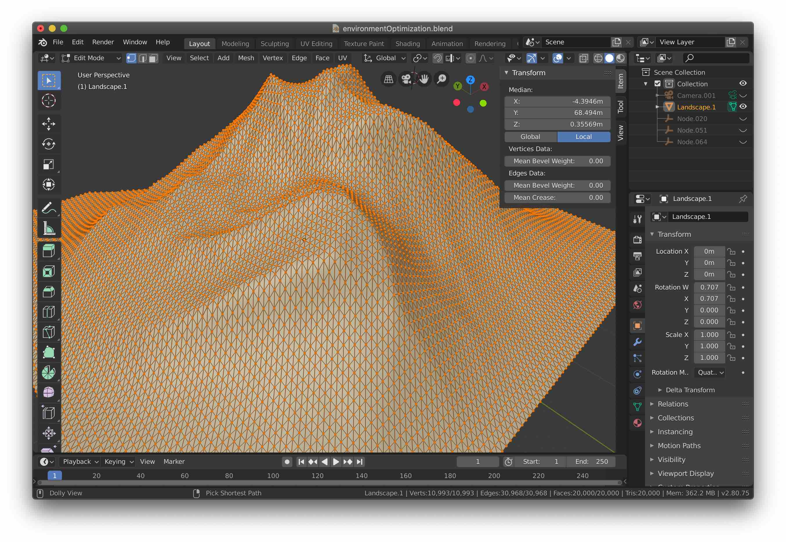
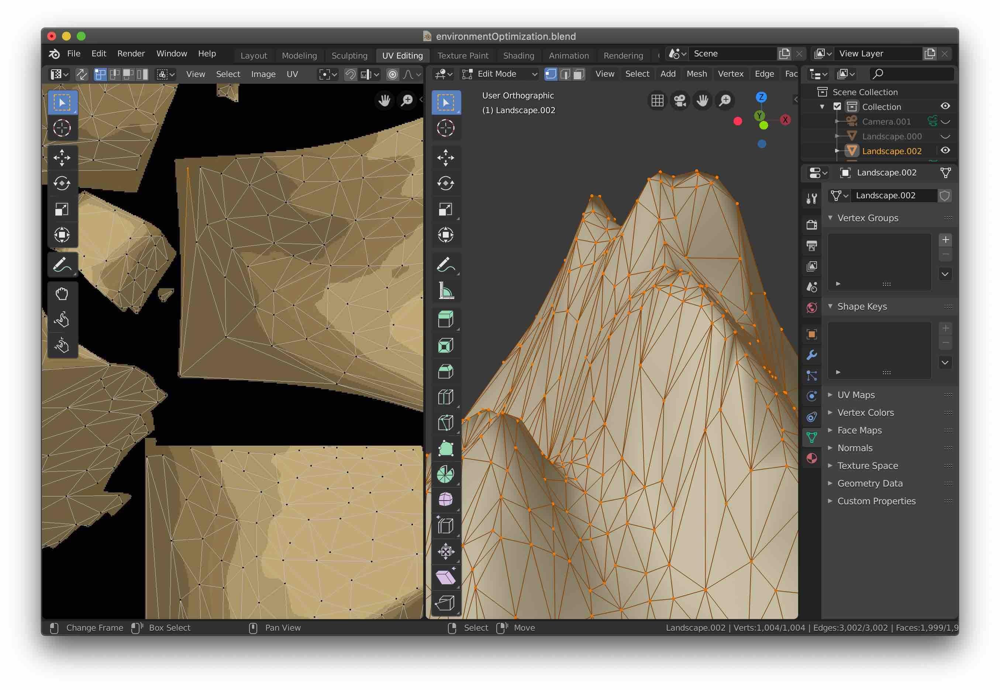

Recent Works
Fanmade Experience for Pendulum — The Island (Madeon Remix)
Interactive, Immersive WebXR Music Experience
October 2020 – January 2021.
Android: The Island (AR) >>
iOS: download the Mozilla WebXR Viewer first, then visit The Island (AR) >>
Brandon Chen, Dawn Nguyen, and I wanted to imagine and create what artists could create as an XR music video, so we designed, modeled, and programmed an interactive mini-world together.
We did a first prototype with Unity, where I contributed animations and support for WebXR VR and AR. Our final result was done in A-Frame. I helped create or combine A-Frame components, animate in A-Frame, design and program ThreeJS 3D and AR interactions, and optimize 3D models with Blender.
I’m proud of the simple story we were able to tell, and even more excited to bring a version of this vision to our upcoming Social XR Music platform.
 